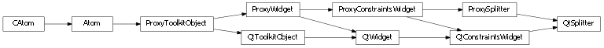
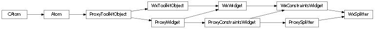

Bases: enaml.widgets.constraints_widget.ConstraintsWidget
A widget which displays its children in separate resizable compartements that are connected with a resizing bar.
A Splitter can have an arbitrary number of Container children.
The orientation of the Splitter. ‘horizontal’ means the children are laid out left to right, ‘vertical’ means top to bottom.
Whether the child widgets resize as a splitter is being dragged (True), or if a simple indicator is drawn until the drag handle is released (False). The default is True.
A splitter expands freely in height and width by default.
A reference to the ProxySplitter object.

Bases: enaml.qt.qt_constraints_widget.QtConstraintsWidget, enaml.widgets.splitter.ProxySplitter
A Qt implementation of an Enaml ProxySplitter.
A reference to the widget created by the proxy.

Bases: enaml.wx.wx_constraints_widget.WxConstraintsWidget, enaml.widgets.splitter.ProxySplitter
A Wx implementation of an Enaml ProxySplitter.
A reference to the widget created by the proxy.